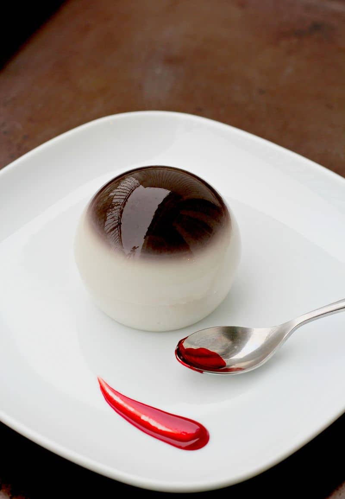

Eyeball Pudding

Descripiton:
An eyeball filled with blood pudding.
Ingredients:
Steps:
- Put the blood in a small bowl for 30 minutes in the fridge
- Cut the eyeball in half
- Clean the inside
- Fill the eyeball with blood and put it together
- Put in the fridge for another 30 minutes